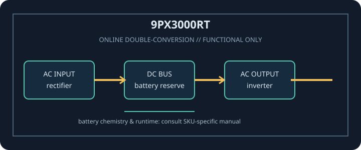

[ ONLINE DOUBLE-CONVERSION UPS // IDENTIFIED MODEL ]
Eaton 9PX3000RT
Eaton 9PX3000RT: 3000 VA / 2700 W online double-conversion UPS. This record covers only the identified SKU and regional configuration; match complete model code and nameplate to manufacturer documentation.

ARCHIVAL IDENTIFICATION: Record full SKU, region, serial/date code, firmware/revision, installed options, battery identifier and observed condition. Similar product names do not prove electrical compatibility.
Model specifications
| Exact model / topology | Eaton 9PX3000RT; Online double-conversion UPS; sine-wave output. |
|---|---|
| Rated output | 3000 VA / 2700 W. VA and W limits are separate constraints; never exceed either. |
| Input / output voltage | Input: 120 V nominal, North American model. Output: Configurable nominal output; verify selected setting and load compatibility in the owner’s manual. |
| Input connection | NEMA L5-30P input plug. |
| Output receptacles | 6 × NEMA 5-20R plus 1 × NEMA L5-30R output receptacles. |
| Battery chemistry / service | Internal sealed lead-acid battery pack; battery replacement and approved external battery compatibility are model-specific. Use the documented procedure only. |
| Runtime | Eaton’s 9PX 700–3000 VA 2U owner’s manual provides load-dependent runtime information; actual runtime varies with load, battery condition/age, charge, environment and external battery configuration. |
| Transfer behavior | Online double-conversion operation continuously supplies regulated inverter output; normal operation does not wait for a mains failure to transfer to inverter. Bypass/overload behavior is defined in the owner’s manual. |
| Communications / compatibility | LCD/status, USB and serial communications; compatible optional network management card/relay accessories may be used. Check current Eaton software, card and host support. |
| Compatibility / safety | 120 V 30 A input circuit with L5-30R source for the UPS L5-30P plug. Match connected plugs and outlet-specific limits; 2700 W is the total maximum. Follow grounding, ventilation and battery safety directions. Read the exact revision of the manufacturer manual before connection, service or battery replacement. |
Service and compatibility notes
- Measure and record connected watts and source voltage; runtime is not guaranteed for an aged or untested battery.
- Do not open energized mains equipment. Never defeat protective earth, overload an outlet, use damaged equipment, or substitute an unapproved battery.
- For hardwired or high-current versions, qualified installation, rated branch protection and local electrical code apply.
- Confirm the complete model suffix, input wiring, output voltage, outlet map and manual revision against the unit nameplate before connecting equipment.
Manufacturer datasheet and manual sources
- Eaton 9PX3000RT manufacturer SKU specificationOfficial SKU identity and product specifications.
- Eaton 9PX 700–3000 VA 2U owner’s manualOfficial manufacturer owner’s manual for installation, runtime, batteries, communications and safety.